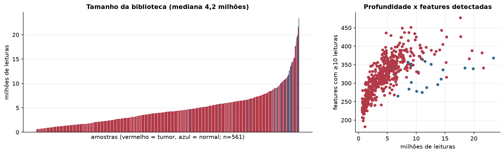
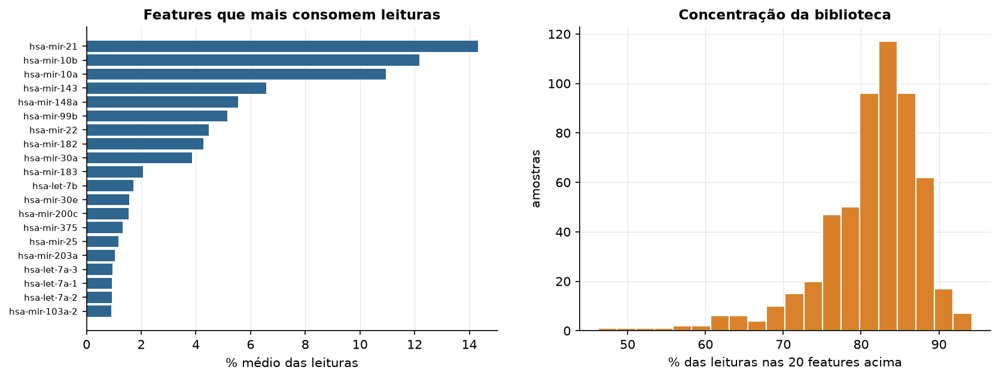
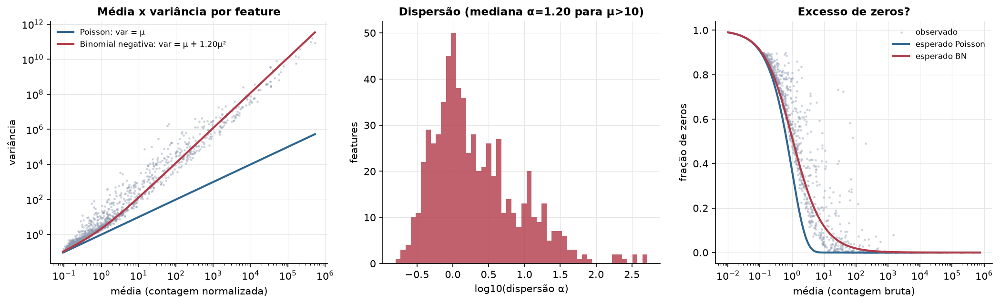
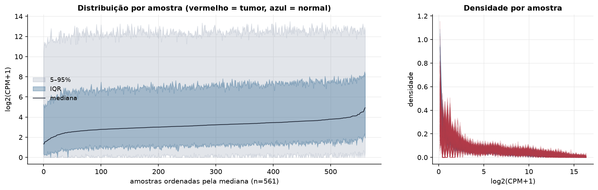
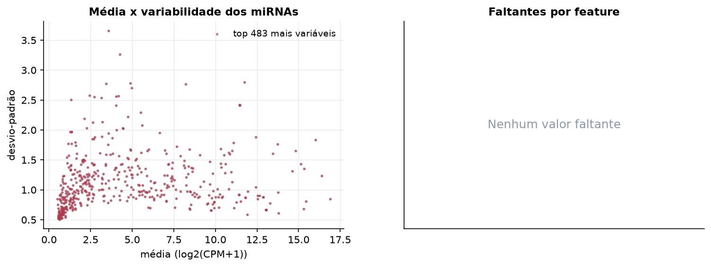
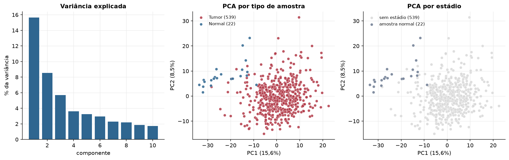
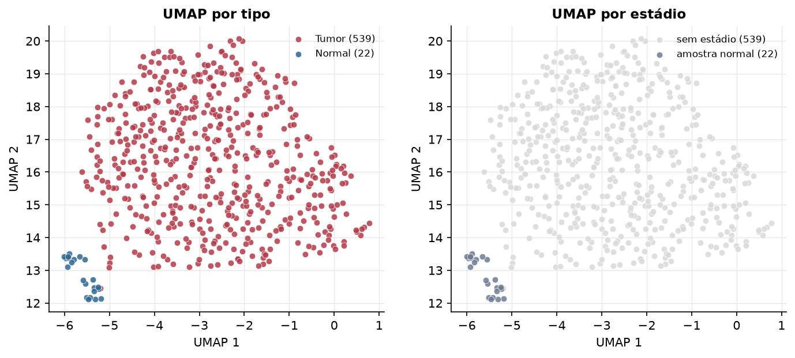
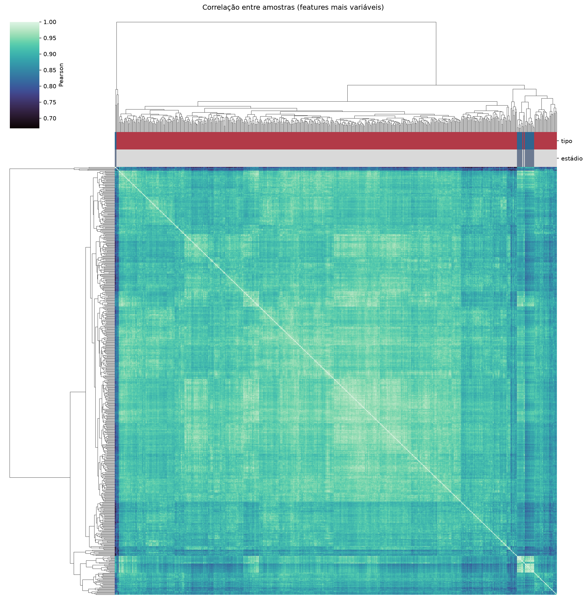
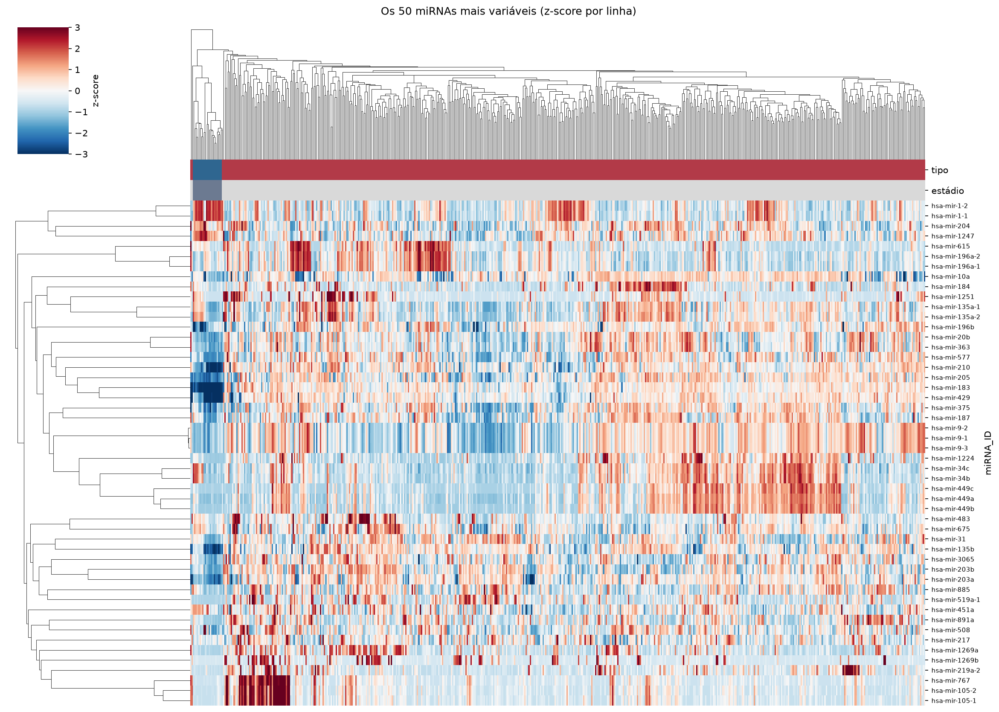
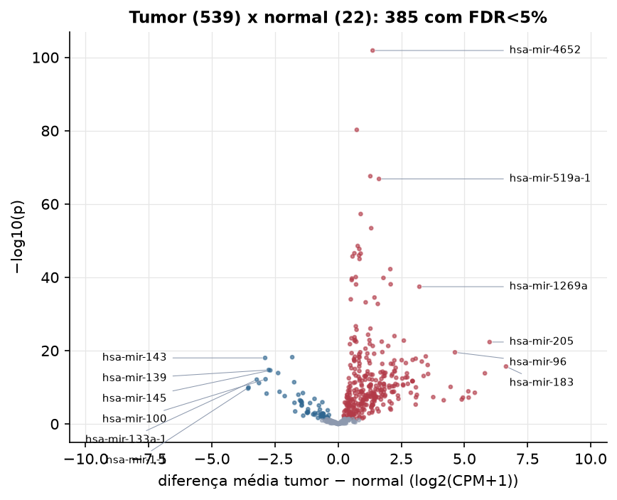

UCEC · miRNA-seq: contagens brutas (GDC)
BCGSC miRNA Profiling (miRBase v21) · gerado em 22/10/2026 05:49
4,2 Mtamanho mediano
1,20dispersão mediana α
483miRNAs
539amostras tumorais
22amostras normais
0,0%valores faltantes
Fonte: API do GDC (BCGSC miRNA Profiling)
Principais resultados
- Bibliotecas de 0,6 a 23,4 milhões de leituras (mediana 4,2). 1.078 de 1.881 features têm leitura em pelo menos 10% das amostras.
- A variância cresce bem acima da média: a dispersão mediana da binomial negativa é α=1.20 (para features com média > 10). Isso descarta um modelo Poisson e indica binomial negativa (ou Poisson-lognormal) na verossimilhança.
- A fração de zeros é compatível com a binomial negativa (diferença mediana -4,0%); inflação de zeros não parece necessária.
- Em média 82,6% das leituras de cada amostra vão para as 20 features mais abundantes.
- 483 miRNAs medidos em 561 amostras (539 tumorais e 22 normais); 0,0% dos valores estão faltando.
- Os dois primeiros componentes principais explicam 15,6% e 8,5% da variância das features mais variáveis.
- Correlação mediana entre amostras: 0,92.
- Amostras com correlação muito abaixo das demais (possíveis outliers técnicos): TCGA-A5-A1OH-01, TCGA-AX-A3FZ-01, TCGA-BG-A3PP-11, TCGA-E6-A1M0-11, TCGA-EY-A1GM-01, TCGA-FI-A2CX-01.
- Tumor x normal: 385 miRNAs diferentes com FDR < 5% (327 maiores no tumor, 58 maiores no normal; 21 pacientes têm o par tumor-normal).
- Mais aumentados no tumor: hsa-mir-4652, hsa-mir-3619, hsa-mir-556, hsa-mir-519a-1, hsa-mir-7-3, hsa-mir-18b, hsa-mir-4664, hsa-mir-522.
- Mais reduzidos no tumor: hsa-let-7c, hsa-mir-143, hsa-mir-139, hsa-mir-145, hsa-mir-99a, hsa-mir-100, hsa-mir-133a-1, hsa-mir-140.
- Associações clínicas com p < 0,05 nos componentes principais: PC2 com idade (p=0.00096); PC3 com idade (p=8.4e-11); PC3 com sobrevida (p=1.8e-06).
Biblioteca


Sobredispersão e zeros

Exploração em log2(CPM+1)
Features com CPM ≥ 1 em pelo menos 20% das amostras (483 features).
Distribuição dos valores


Estrutura das amostras




Tumor x normal

Features mais diferentes entre tumor e normal
| miRNA_ID | diferenca_tumor_menos_normal | t | p | fdr |
|---|---|---|---|---|
| hsa-mir-4652 | 1.366 | 26.902 | 1.32e-102 | 6.37e-100 |
| hsa-mir-3619 | 0.737 | 23.558 | 5.85e-81 | 1.41e-78 |
| hsa-mir-556 | 1.274 | 29.619 | 2.58e-68 | 4.16e-66 |
| hsa-mir-519a-1 | 1.616 | 20.369 | 1.45e-67 | 1.75e-65 |
| hsa-mir-7-3 | 0.892 | 20.681 | 5.44e-58 | 5.25e-56 |
| hsa-mir-18b | 1.308 | 23.238 | 3.96e-54 | 3.19e-52 |
| hsa-mir-4664 | 0.774 | 21.416 | 2.83e-49 | 1.95e-47 |
| hsa-mir-522 | 0.837 | 16.187 | 1.87e-48 | 1.13e-46 |
| hsa-mir-138-2 | 0.643 | 16.317 | 2.78e-47 | 1.49e-45 |
| hsa-mir-516a-1 | 0.892 | 15.956 | 3.33e-47 | 1.61e-45 |
| hsa-mir-519a-2 | 0.826 | 15.919 | 1.05e-46 | 4.61e-45 |
| hsa-mir-6877 | 0.569 | 20.371 | 2e-46 | 8.05e-45 |
| hsa-mir-516a-2 | 0.847 | 15.584 | 1e-45 | 3.72e-44 |
| hsa-mir-877 | 2.065 | 31.323 | 5.89e-43 | 2.03e-41 |
| hsa-mir-6720 | 0.697 | 14.527 | 8.49e-41 | 2.73e-39 |
| hsa-mir-4724 | 1.793 | 23.572 | 1.47e-40 | 4.44e-39 |
| hsa-mir-5684 | 0.546 | 18.446 | 2.13e-40 | 6.06e-39 |
| hsa-mir-489 | 0.538 | 15.682 | 5.67e-40 | 1.52e-38 |
| hsa-mir-4746 | 2.079 | 31.087 | 7.96e-39 | 2.02e-37 |
| hsa-mir-6499 | 0.709 | 15.639 | 8.7e-39 | 2.1e-37 |
| hsa-mir-1269a | 3.216 | 16.757 | 3.64e-38 | 8.37e-37 |
| hsa-mir-7706 | 1.439 | 26.59 | 3.27e-35 | 7.19e-34 |
| hsa-mir-3161 | 0.5 | 13.177 | 1.01e-34 | 2.12e-33 |
| hsa-mir-3131 | 1.089 | 14.666 | 6.73e-34 | 1.36e-32 |
| hsa-mir-937 | 1.57 | 20.895 | 1.84e-33 | 3.56e-32 |
| hsa-mir-7702 | 0.7 | 13.072 | 2.29e-27 | 4.25e-26 |
| hsa-mir-1269b | 1.277 | 11.293 | 9.64e-27 | 1.72e-25 |
| hsa-mir-3136 | 0.728 | 17.751 | 1.98e-26 | 3.42e-25 |
| hsa-mir-3651 | 1.185 | 18.345 | 4.59e-25 | 7.64e-24 |
| hsa-mir-940 | 2.23 | 23.878 | 1.08e-24 | 1.74e-23 |
Associação com variáveis clínicas
p-valores da associação dos três primeiros componentes principais (só tumores) com estádio (Kruskal-Wallis), sexo (Mann-Whitney), idade (Spearman) e sobrevida global (Cox univariado).
| estádio (Kruskal) | sexo (Mann-Whitney) | idade (Spearman) | sobrevida OS (Cox) | |
|---|---|---|---|---|
| PC1 (13,0%) | 0.067 | 0.998 | ||
| PC2 (8,0%) | 0.000965 | 0.215 | ||
| PC3 (6,1%) | 8.44e-11 | 1.8e-06 |